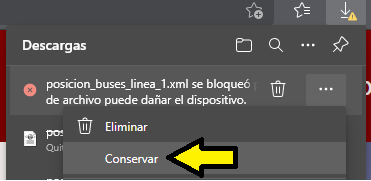

Tutorial
Consultar mapa general de líneas
- En el menú de navegación en la esquina derecha superior hacemos click en "Mapa".

- Bajo el título "Mapa general de líneas" podemos ver el plano en formato pdf y hacer zoom para explorar las líneas.

Ver detalles de línea y parada más cercana
- Hacemos click en "Mapa".

- Debajo del plano general de líneas se encuentran listadas todas las líneas, hacemos click en "Detalles" de la línea que queramos.

- Se mostrará una imagen con las paradas, conexiones y horarios de la línea. Para comprobar que parada tenemos más próxima hacemos click en "Compartir coordenadas".

- A continuación, el buscador nos pedirá conceder la ubicación de nuestro dispositivo. Clicamos "Permitir".

- Al hacer esto, el texto del botón cambiará a "Obtener parada más cercana". Hacemos click en él.

- Se nos mostrará el nombre de la parada más cercana y nuestra distancia en metros a esta.

Consultar llegadas de autobuses
- Hacemos click en "Mapa".

- Bajo el plano, en la sección de Listado de líneas, hacemos click en el botón "Localizar buses" de la línea que queramos.

- Se mostrará un listado de las paradas de la línea (izquierda) con el tiempo en minutos de llegada del siguiente autobús (derecha) y un icono de un autobús encima de la parada en la que este se halle.

Descargar datos de posición de autobuses
- Hacemos click en "Exportar datos".

- En la lista de líneas, hacemos clck en "Descargar" de la que queramos bajarnos datos de posición de autobuses.

- Si nuestro buscador nos informa que la descarga se ha bloqueado, hacemos click en "Conservar" para permitir la descarga.
- 
- Con el archivo XML ya descargado, podemos subirlo para visualizarlo en esta misma página. Bajo los botones de descarga hacemos click en "Elegir archivo" y seleccionamos el XML recién bajado.

- Al aceptar la subida, se mostrarán varios datos del archivo seguido de su contenido.